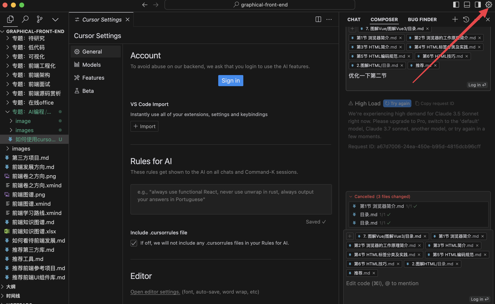
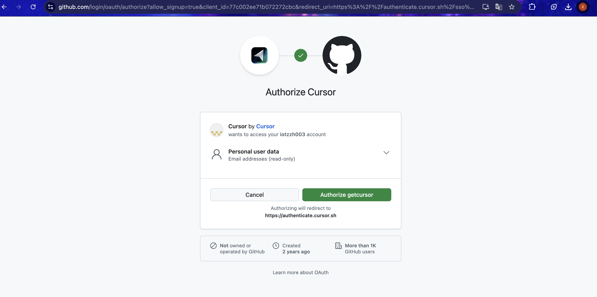
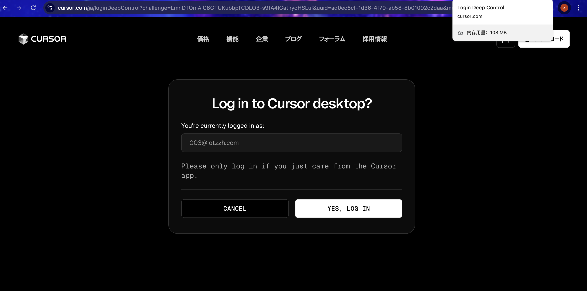
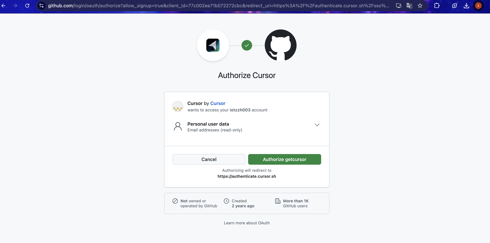
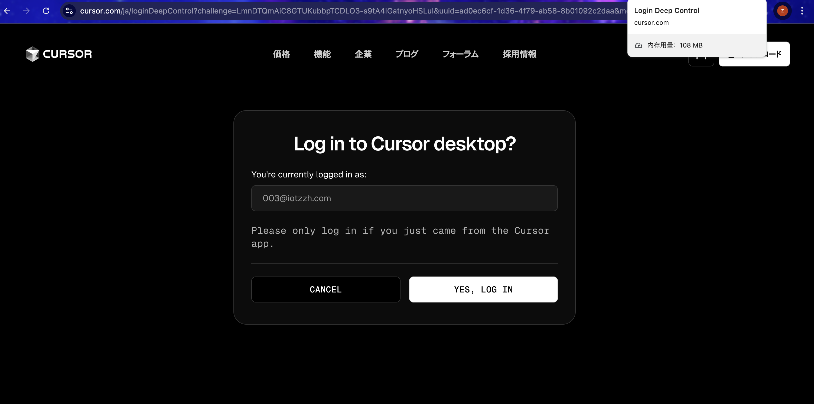

Cursor是一款革命性的AI辅助编程工具，它将强大的大语言模型与现代代码编辑器无缝集成。作为开发者，使用Cursor可以显著提升你的编程效率：
下面我们将一步步指导你如何安装并登录Cursor，开启你的AI辅助编程之旅。
访问Cursor官方网站：https://www.cursor.com，点击下载按钮获取最新版本。
下载完成后，运行安装程序并按照提示完成安装过程。安装过程简单直观，只需几分钟即可完成。

Cursor使用GitHub账号进行身份验证。如果你还没有GitHub账号，需要先注册一个。

启动Cursor后，点击右上角的设置图标，进入设置界面。

在设置界面中，选择使用GitHub账号登录。
 




完成授权后，你将看到登录成功的界面，现在你可以开始使用Cursor的所有功能了。

成功安装并登录Cursor后，你可以开始探索其强大的AI编程功能。在接下来的教程中，我们将详细介绍Cursor的界面布局和核心功能，帮助你充分利用这款强大的工具提升编程效率。